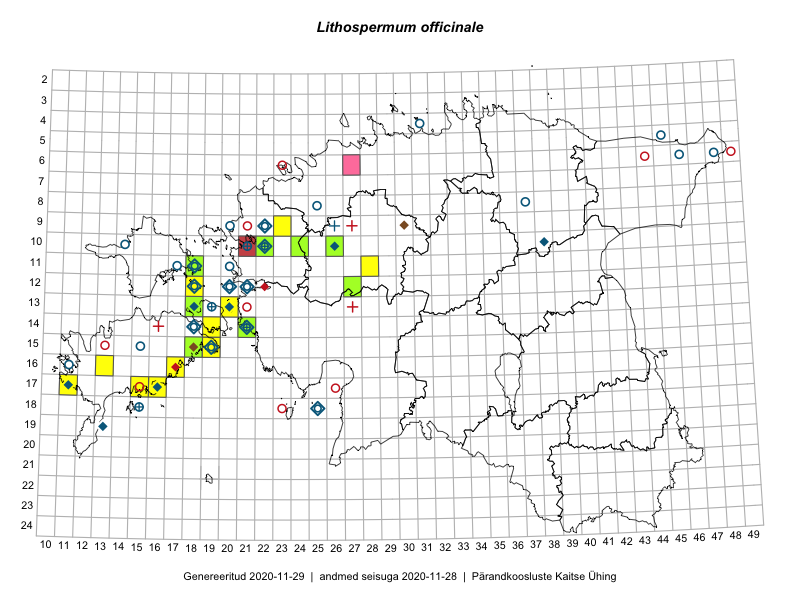

Lithospermum officinale
Uuendatud: 2016-12-02
Kaardile koondatud taksonid: Lithospermum officinale L.

Kaart põhineb 26 kirjel, neist vaatlusi 25 ja eksemplare 1. Taksonit on leitud 12 ruudust.
Kuvatud viited 20 esimesele andmebaasikirjele, ülejäänud PlutoFis
- Peedu Saar, Elle Roosaluste: 2015-07-12: 13-20: GPS punkt
- Peedu Saar, Elle Roosaluste: 2015-07-12: 13-20: ala
- Ott Luuk, Elle Roosaluste, Jaak-Albert Metsoja: 2015-06-16: 17-11: GPS punkt
- Meeli Mesipuu: 2015-06-21: 15-19: ala
- Meeli Mesipuu: 2015-06-21: 15-19: GPS punkt
- Meeli Mesipuu: 2015-06-20: 14-19: ala
- Meeli Mesipuu: 2015-06-20: 14-19: GPS punkt
- Mari Reitalu, Oliver Parrest: 2015-07-27: 16-13: ala
- Meeli Mesipuu: 2015-06-25: 14-19: ala
- Sirje Azarov, Aira Alasi: 2015-08-17: 17-16: GPS punkt
- Karin Kikas, Elle Rajandu: 2015-07-24: 15-18: ala
- Karin Kikas, Elle Rajandu: 2015-07-22: 17-15: ala
- Karin Kikas, Elle Rajandu: 2015-07-22: 17-15: GPS punkt
- Elle Rajandu, Karin Kikas: 2015-07-24: 15-18: GPS punkt
- Elle Rajandu, Karin Kikas: 2015-07-24: 15-18: GPS punkt
- Maret Gerz, Jaak-Albert Metsoja, Ott Luuk, Toomas Kukk, Meeli Mesipuu, Thea Kull: 2014-06-11: 10-26: ala
- Maret Gerz, Jaak-Albert Metsoja, Ott Luuk, Toomas Kukk, Meeli Mesipuu, Thea Kull: 2014-06-11: 10-26: GPS punkt
- Tõnu Ploompuu: 2015-08-21: 10-22: ala
- Hanna-Eliisa Luts, Tõnu Ploompuu: 2015-07-16: 09-23: ala
- Mari Reitalu, Triin Reitalu: 2016-06-30: 15-19: ala